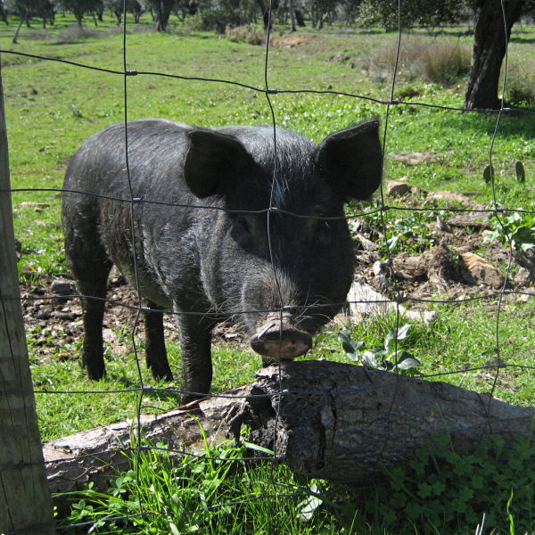

豬隻品種介紹
豬隻品種介紹
豬隻品種介紹
豬隻品種介紹

外貌:藍瑞斯長著一對巨型大耳、修長體型、純白皮膚。
特性:藍瑞斯具有高產仔、性格溫馴、乳汁充足。
優勢:成長速度雖然慢於杜克洛，但能夠以較少的飼料換取到較多的肉。

外貌：約克夏擁有純白皮膚，最具代表性的是其直立的雙耳與修長的體型。
特性：具有優異的繁育能力，母豬母性好、乳汁充足，且生長性能穩定。
優勢：生長速度極快，肉質瘦肉比例高，是商業豬場中不可或缺的優良品種。

外貌：紅棕色皮毛、半下垂耳朵。
特性：保水性好使肉質更有彈性。
優勢：生長最快、換肉率高。

外貌:全身覆蓋黑色的毛，但有六個地方是白色的，鼻端、尾端、四肢末端。
特性:產仔數少、生長慢、體型小。
優勢:被稱謂豬肉界的神戶和牛，高保水性、白色油脂。

外貌:皮膚多為灰色或黑色，腿長且蹄部通常呈黑色。
特性:能將攝取的脂肪儲存在肌肉纖維之間（類似和牛的油花），而不是只在皮下。
優勢:抗氧化力、鮮嫩多肉汁、高油酸含量。

外貌:最常見的是黑白相間，也有全黑或粉紅帶黑斑的、肚子微下垂、背部稍微凹陷、耳朵小而直立。
特性:高智商、膽小且好奇。
優勢:壽命較長、陪伴性。